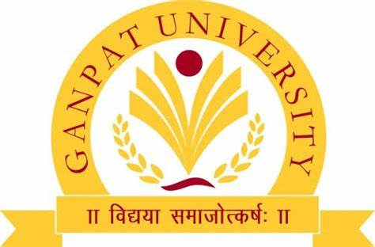

<section id="about-section" class="about-section">
  <div class="container-fluid">
    <h2 class="text-center about-heading">About Me</h2>
    <div class="about-content">
      <!-- Profile Image -->
      <div class="about-image">
        
      </div>

      <!-- Right Side Content -->
      <div class="right-side-content">
        <!-- Education Card -->
        <div class="education-card">
          <div class="education-title">
            
            Education
          </div>
          <ul class="education-list">
            <li> Master of Applied Computing - University of Windsor</li>
            <li> B.Tech Computer Engineering - Ganpat University</li>
          </ul>
        </div>

        <!-- About Description -->
        <div class="about-description">
          <p>Hi! I am a <strong>Data Scientist</strong> with a strong background in <strong>Machine Learning, Data Analysis, and Artificial Intelligence</strong>. I specialize in transforming raw data into actionable <strong>insights</strong> that help businesses make informed decisions. My goal is to apply innovative data solutions to solve real-world problems and enhance business outcomes. With a passion for numbers and the ability to convey complex information through clear and simple <strong>visualizations</strong>, I am committed to <strong>lifelong learning</strong> and keeping up with the latest advancements in Data Science, AI, and Machine Learning technologies.</p>
        </div>
      </div>
    </div>
  </div>
</section>


